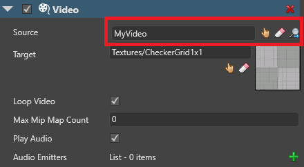

Set up a video
Warning
Приносим свои извинения за неудобства. Для этой страницы нет перевода на русский язык. Она будет отображаться на английском языке.
Beginner Programmer Designer
Note
Stride supports most major video formats, but converts them to .mp4. To reduce compilation time, we recommend you use .mp4 files so Stride doesn't have to convert them.
Note
Currently, Stride doesn't support video on iOS platforms.
1. Add a video asset
Before you can use a video in your game, you need to import it as an asset.
Drag the video file from Explorer into the Asset View.
Alternatively, in the Asset View, click Add asset and select Media > Video, then browse to the video you want to add and click Open.

If the video has audio tracks, you can import these at the same time, or import just the audio from the video.
Click OK.
Stride adds the video as an asset in the Asset View. If you imported audio tracks from the video file, Stride adds them as separate audio assets.
Note
Currently, you can't preview videos in the Asset Preview.
For information about video asset properties, see Video properties.
2. Add a video component
In the Scene Editor, select or create an entity to add a video component to.
Tip
It's usually simplest to add the component to the same entity that has the texture plays the video. This just makes it easier to organize your scene.
In the Property Grid, click Add component and select Video.
Stride adds a video component to the entity.

In the Video properties, under Source, select the video asset.

Under Target, select the texture you want to display the video from.
Models that use this texture will display the video.
When the video isn't playing in your scene, Stride displays the texture instead.
3. Create a script to play the video
After you set up the video component, play it from a script using:
myVideoComponent.Instance.Play();
Other functions
LoopRange: The looping range (must be an area in the video inPlayRange)IsLooping: Loop the video loop infinitelySpeedFactor: Set the video play speed.1is normal speed.PlayState: The current video play state (playing,pausedorstopped)Duration: The duration of the videoCurrentTime: The current play time in the videoVolume: The audio volumePlayRange: The video start and end timePlay/Pause/Stop: Play, pause, or stop the videoSeek: Seek to a given time
Example script
{
public class VideoScript : StartupScript
{
// Game Studio displays the public member fields and properties you declare in this script
public override void Start()
{
// Initialization of the script.
Entity.Get<VideoComponent>().Instance.Play();
}
}
}
4. Add the script to the entity
In the Scene Editor, select the entity that has the video component.
In the Property Grid, click Add component and select the video script.

Stride adds the script as a component.
You can adjust public variables you define in the script in the Property Grid under the script component properties.